Профитроли
Ингредиенты:
- Сливочное масло - 100 г
- Щепотка соли
- Вода - 250 г
- Мука пшеничная - 150 г
- Разрыхлитель - 3 г
- Яйца - 4-5 шт (общий вес яиц без скорлупы 233 г)
- Любой крем (заварной, сливочный, крем-чиз, масляный, шоколадный и тд.)
- Повидло, варенье, джем
- Паштеты, икра, рыба, ветчина и тд
Приготовление:
- Готовим тесто на профитроли с заварным кремом.Нам понадобится вода, сливочное масло, соль, мука, яйца.
- 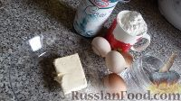
- Как приготовить профитроли с заварным кремом:Наливаем стакан воды в кастрюлю и ставим на огонь.
- 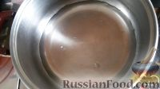
- Стакан муки просеиваем.

- Масло я растапливаю в микроволновке
- 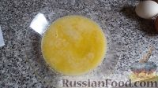
- Добавляю масло в воду, туда же соль. Доводим до кипения.
- 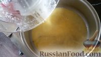
- Добавляем в воду с маслом муку, постоянно перемешивая.

- Оставляем минуты на 2 на небольшом огне, хорошо перемешивая тесто. Остужаем.
- 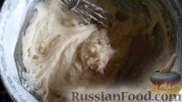
- Яйца разбиваем и слегка перемешиваем венчиком.
- 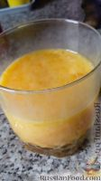
- Постепенно вводим яйца в заварное тесто, перемешивая до однородности после каждой порции. (Можно просто добавлять яйца по одному.) Тесто будет как бы делиться на кусочки, но потом образуется однородная масса. Я перемешивала вилкой, слегка наклонив кастрюлю.
- 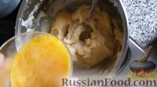
- Заварное тесто получается такое, как на фото.

- На противень кладем лист пергамента, слегка смазываем маслом.
- 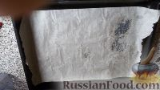
- У меня нет кулинарного шприца, и я чайной ложкой выкладываю тесто на противень.Помещаем будущие профитроли минут на 30-35 в духовку, разогретую до 180-200 градусов.

- Вот такие профитрольки. Оставляем, пусть остывают.

- Готовим заварной крем. Молоко выливаем в кастрюлю, доводим до кипения, убираем, чтобы остыло.
- 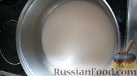
- Желтки перемешиваем с мукой, сахаром, ванилином или ванильным сахаром и щепоткой соли.

- Добавляем в молоко желтковую смесь
- 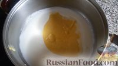
- Слегка взбиваем миксером (секунд 20), ставим на медленный огонь на 5 минут. Постоянно помешиваем. Потом накрываем крышкой и убираем в холодильник (подождите, пока крем остынет)
- 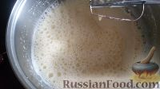
- Набираем в шприц заварной крем (у меня обычный медицинский)

- Можно сделать надрез в пирожных и наполнить их кремом с помощью ложки

- Наполняем заварные пирожные кремом.

- Профитроли с заварным кремом готовы. Приятного чаепития!